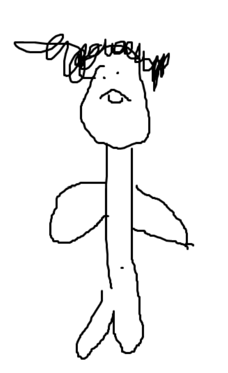

ich heiße Ahmet, ich bin 15 jahre alt und gehe in die 9. Klasse der Max-Brauer-Schule. ich bin in Deutschland geboren, allerdings kommen meine Eltern aus der Türkei. Ich habe einen kleinen Bruder, der ebenfalls in die 5. Klasse der Max-Brauer-Schule geht. Ich bin über 1.80m groß. Früher sind mein Bruder und ich auf die Grundschule Bahrenfelder Straße gegangen.
